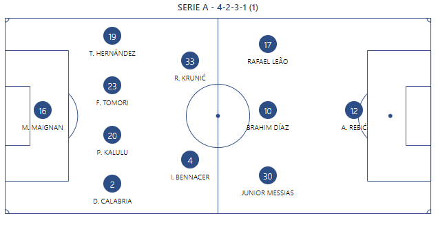
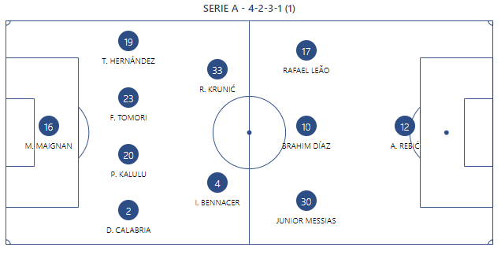

EQUIPO OFICIAL DEL AC MILAN
Alineaciones:Arquero:Maignan; Defensores:Calabria, Kalulu, Tomori, Theo Hernandez; Mediocampistas:Bennacer, Leao, Messias, Diaz, Krunic; Delantero:Rebic. DT: Stefano Pioli.
Alineaciones:Arquero:Maignan; Defensores:Calabria, Kalulu, Tomori, Theo Hernandez; Mediocampistas:Bennacer, Leao, Messias, Diaz, Krunic; Delantero:Rebic. DT: Stefano Pioli.
